RFID-GL (2008-06-29 기출문제)
1과목: RFID 시스템 개요
1. 다음 중 RFID의 특징이 아닌 것은?
- 비접촉식이다.
- 동시에 여러 개의 Tag를 인식할 수 있다.
- 시각에 의한 인식이 가능하다.
- 사물에 부착이 가능하다.
(정답률: 85%)

2. 주파수 대역에 따른 RFID 특징 중 틀린 것은?
- UHF대역 : 900㎒ 대역과 433㎒ 대역이 사용됨
- 13.56㎒ : ISM 밴드 대역으로 UHF대역보다 인식거리가 짧음
- 2.45㎓ : 능동형과 수동형의 두 가지 형태가 사용됨
- 135㎑ 미만 : 자기장이 아닌 전기장 결합으로 동작함
(정답률: 63%)
3. 다음 중 TAG에 1차 혹은 2차 전지가 내장되어 자체전원으로 식별한 정보를 리더의 기동(wake up)신호 없이 지속적으로 Tag정보를 송신하는 Tag는?
- 수동형 태그
- 능동형 태그
- 반능동형 태그
- 금속 태그
(정답률: 74%)
4. 현재 국내에서 항만 지역에만 제한적으로 사용되는 반능동형 RFID 시스템의 주파수 대역은?
- 433㎒ 대역
- 900㎒ 대역
- 13.56㎒ 대역
- 2.45㎓ 대역
(정답률: 74%)
2과목: RFID 기술
5. 리더의 안테나 출력이 0.5W라고 할 때 dBm의 환산 값은? (단,log105≒ 0.7)
- 0.7 dBm
- -7 dBm
- 27 dBm
- 37 dBm
(정답률: 65%)
6. 후방 산란(back-scattering) 방식에 대한 설명으로 틀린 것은?
- 리더와 태그는 전자파 결합 방식이다.
- 안테나를 통한 원거리장에서의 전자기파에 의해 이루어지므로 원거리장 조건인 λ/2π보다 가까운 거리에서 이루어진다.
- UHF 수동태그에서 이용한다.
- 태그의 레이더 단면적(RCS: radar cross section)을 변화시키는 방식이다.
(정답률: 72%)
7. 전자파가 자유공간을 진행할 때 거리와 전력 밀도와의 관계는?
- 거리가 2배가 되면 전력 밀도도 2배가 된다.
- 거리가 2배가 되면 전력 밀도는 1/2배가 된다.
- 거리가 2배가 되면 전력 밀도는 4배가 된다.
- 거리가 2배가 되면 전력 밀도는 1/4배가 된다.
(정답률: 65%)
8. RFID에서 상향링크(up-link)와 하향링크(down-link)에 대한 설명으로 바른 것은?(상향링크, 하향링크)
- 리더→태그, 태그→리더
- 태그→리더, 리더→태그
- 리더→다른 리더, 다른 리더→리더
- 태그→다른 태그, 다른 태그→태그
(정답률: 60%)
9. 인코딩(encoding, 부호화)의 특징을 설명한 것 중 틀린 것은?
- NRZ는 맨체스터 방식에 비해 대역폭이 좁다.
- 맨체스터 방식은 DC 성분을 포함하지 않는다.
- 맨체스터 방식은 클록 정보 추출에 불리하다.
- 수동 RFID에서 인코딩은 리더에서 태그로의 전력 전송 측면을 고려해야 한다.
(정답률: 75%)
10. 아래의 그림에서 변조지수(modulation index ; 듀티팩터)는?
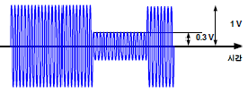
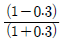
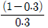
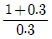
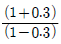
(정답률: 70%)
11. 공간상의 전력의 전달과 관련된 Friis 방정식에서 고려의 대상이 아닌 것은?
- 수신 안테나의 유효면적
- 송신 안테나 이득
- 페이딩에 의한 손실
- 거리
(정답률: 68%)
12. RFID 시스템에서 태그 정보의 경로를 바르게 설명한 것은?
- 시스템소프트웨어-미들웨어-호스트소프트웨어 -응용소프트웨어
- 시스템소프트웨어-호스트소프트웨어-미들웨어-응용소프트웨어
- 응용소프트웨어-시스템소프트웨어-미들웨어-호스트소프트웨어
- 호스트소프트웨어-미들웨어-응용소프트웨어-시스템소프트웨어
(정답률: 73%)
13. 전자파의 송신기와 수신기 사이의 전파 전달에 관한 설명 중 잘못된 것은?
- 반사는 전자파의 파장보다 작은 물체에 파가 입사될 때 주로 일어난다.
- 금속체에서 전파의 흡수는 주로 표면에 집중 되어 있다.
- 모서리에 부딪친 전자파의 일부가 모서리 뒷면으로 전달되는 것을 설명하는 것이 회절이다.
- 송신기와 수신기 경로 중간에 방해 물체가 놓여있지 않아 육안으로 보이는 것을 가시거리(LOS: Line of Sight)라 한다.
(정답률: 64%)
14. 다음 중 태그의 인식거리를 결정하는 요소가 아닌 것은?
- 태그 안테나의 이득
- 태그의 사용 주파수
- 태그 칩의 크기
- 태그 칩의 소비 전력
(정답률: 68%)
15. 태그 칩과 태그 안테나 사이에 공핵 정합이 필요한 이유는?
- 태그의 크기를 소형화하기 위해서
- 태그 안테나에서 수신한 전력을 태그 칩으로 효율적으로 전달하기 위해서
- 태그 안테나와 태그 칩의 부착을 용이하게 하기 위해서
- 태그의 가격을 낮추기 위해서
(정답률: 72%)
16. UHF 대역 Gen-2 태그의 디지털 회로에서 슬롯 카운터가 사용되는 이유는?
- 여러 태그 간 충돌 방지 및 순차적 인식
- 태그의 인식 거리 향상
- 태그의 명령 처리 오류 정정
- 난수 발생
(정답률: 65%)
17. HF 대역과 비교했을 때 UHF 대역 태그의 장점이 아닌 것은?
- 물이나 고유전체에 의한 적은 영향
- 작은 태그 크기
- 먼 통신 거리
- 빠른 처리 속도
(정답률: 68%)
18. RFID 리더의 무선 송신기가 만족해야하는 특성이 아닌 것은?
- 정확성
- 효율성
- 유연성
- 선택도
(정답률: 66%)
19. 모노스태틱 구조와 바이스태틱 구조를 비교 하였을 때 바이스태틱 구조가 가지는 특성이 아닌 것은?
- 보다 나은 감도를 갖는다.
- 비용이 적게 들어간다.
- 순방향 링크가 주요 제약 조건으로 동작한다.
- 수신 감도에 크게 좌우되지 않는다.
(정답률: 79%)
20. 리더에서 태그의 신호를 검출하고 있다. 영향을 주는 주요 성분이 아닌 것은?
- 송수신 격리도(isolation)
- LO(Local Oscillator)의 위상잡음
- 믹서의 대역폭
- DC 오프셋
(정답률: 54%)
21. Superheterodyne 구조의 수신기에서 LO(local oscillator)의 주파수가 800㎒이고 수신 주파수가 867㎒이다. 이 경우의 IF주파수와 이미지 주파수의 합은?
- 733㎒
- 800㎒
- 867㎒
- 1600㎒
(정답률: 61%)
22. 리더의 RF 부품 중에서 전력소모가 가장 큰 부품은?
- 믹서
- LO(Local Oscillator)
- 전력증폭기
- 서큘레이터
(정답률: 68%)
23. RFID 리더에서 1W의 전력을 송출하여 수동형 태그의 안테나로 전달할 때, 전력의 세기에 대한 내용으로 맞는 것은?
- 전력의 세기는 리더 안테나의 이득에 반비례 한다.
- 전력의 세기는 태그 안테나의 이득에 반비례 한다.
- 전력의 세기는 지면과의 높이에 반비례한다.
- 전력의 세기는 거리의 제곱에 반비례한다.
(정답률: 65%)
24. 리더에서 태그로부터 얻은 정보를 무선으로 네트워크로 보내려고 한다. 이에 적당하지 않은 방식은?
- Wibro(Wireless Broadband Internet)
- USB(Universal Serial Bus)
- Bluetooth
- WLAN(Wireless LAN)
(정답률: 74%)
25. 다음 중 RFID 태그의 인식률과 관계가 없는 것은?
- 리더 안테나와 태그 안테나간의 편파
- 태그 칩과 태그 안테나의 임피던스 정합
- 태그에 부착되는 유전체의 종류
- 태그 주변의 조도
(정답률: 73%)
26. RFID 시스템에서 태그의 방향성을 무시하기 위해 리더에서 사용하는 편파 방식은?
- 수직 편파
- 수평 편파
- 타원 편파
- 원형 편파
(정답률: 70%)
27. 태그의 유효 면적에 대한 설명 중 옳은 것은?
- 태그의 실제 면적을 의미한다.
- 태그에서의 입사 전력 밀도를 곱하면 칩의 입사 전력이 된다.
- 태그에서의 입사 전장을 곱하면 칩의 수신 전력이 된다.
- 태그에서의 입사 전장을 곱하면 태그로부터의 산란 전력이 된다.
(정답률: 48%)
28. RFID 프린터가 하는 기능은?
- 라벨에 정보를 프린트, 태그 인코딩, 검증, 제품에 응용정보를 인쇄한다.
- 태그 인코딩, 검증, 사람이 읽을 수 있는 정보만을 라벨에 프린트한다.
- 태그 인코딩, 검증, 라벨 뒤에 프린트 한다
- 태그 인코딩, 검증, 라벨에 어떠한 정보를 프린트한다.
(정답률: 66%)
29. 다음 중 온도가 높은 장소에 보관될 팔레트에 부착하는 RFID라벨 프린팅 방법으로 가장 적합한 것은?
- 직접열 방식
- 레이저 프린트
- 열전사 방식
- 아무거나 상관없다
(정답률: 78%)
30. RFID API 에 대한 설명으로 올바르지 않은 것은?
- RFID API 는 리더의 제조사별로 다를 수 있다.
- RFID API가 없이는 RFID 응용프로그램을 개발 할 수 없다.
- RFID API를사용하기위해서는어떠한 프로그래밍 언어를 사용할지 먼저 결정하고 제조에 해당 언어가 지원되는지 확인해야 한다.
- RFID API 는 RFID 리더의 기본적인 성능을 쉽게 접근할 수 있도록 제공되는 라이브러리이다.
(정답률: 84%)
31. 다음 설명에 해당하는 OSI 7 계층은?
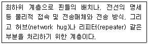
- 물리 계층
- 데이터 계층
- 네트워크 계층
- 전송 계층
(정답률: 71%)
32. 다음 RS-232C에 대한 설명 중 틀린 것은?
- 미국 EIA에 의해 규격화된 것으로 EIA-RS232C 규격이라고도 부른다.
- 데이터 비트를 하나씩 전송하는 시리얼(serial) 통신 방식이다.
- 통신 포트는 25 pin 또는 9 pin 을 사용한다.
- 케이블 길이는 사실상 한계가 없다.
(정답률: 77%)
33. RFID 미들웨어의 데이터 필터링 기능이 아닌 것은?
- 중복 인식 데이터 제거
- 부정확한 인식 데이터 교정
- 데이터 암호화
- 데이터 분류
(정답률: 66%)
34. ALE 1.1 규격에 포함되어 있지 않은 API는?
- Reading API
- 태그 API
- Writing API
- Access Control API
(정답률: 61%)
35. 아래 그림에서 Client 2 Event Cycle이 인식한 EPC 데이터 목록은?
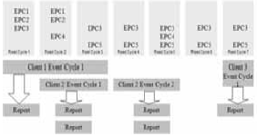
- {EPC1, EPC2, EPC4}
- {EPC3, EPC5}
- {EPC3, EPC4, EPC5}
- {EPC1, EPC2, EPC3, EPC4, EPC5}
(정답률: 57%)
36. RFID 미들웨어의 활용 효과가 아닌 것은?
- RFID 태그 비용 절감
- RFID 애플리케이션 개발 생산성 증대
- RFID 도입 비용 절감
- RFID 정보 공유 효과
(정답률: 59%)
37. 다음 중 EPCIS에 대한 설명으로 틀린 것은?
- EPCIS는 EPCglobal 네트워크 구조(architecture)의 하위 레벨 보다 다양한 기업 IT환경에서 운영된다.
- EPCIS는 현재 데이터와 함께 과거의 데이터(historical data) 다룬다.
- EPCIS보다 하위층에 존재하는 요소들은 EPC 정보의 실시간 처리를 다룬다.
- EPCIS는 단순히 가공되지 않은(raw) EPC에 대한 관찰(observation)들을 다루는 기능이 핵심기능이다.
(정답률: 53%)
38. 다음 중 EPCIS의 세가지 인터페이스가 아닌 것은?
- EPCIS Capture Interface
- EPCIS Query Control Interface
- EPCIS Query Callback Interface
- EPC Network interface
(정답률: 66%)
39. 다음 중 EPCIS framework에 대한 내용이 아닌 것은?
- 계층구조
- 통합성
- 모듈화
- 확장성
(정답률: 55%)
40. RFID 네트워크를 통해 객체정보를 획득하는 이유는?
- RFID 태그 메모리 사이즈가 작기 때문이다.
- RFID 정보서버는 웹서버를 이용할 수 있기 때문이다.
- RFID 태그의 Rewrite가 불가능하기 때문이다.
- RFID 미들웨어가 데이터베이스 질의를 지원하지 않기 때문이다.
(정답률: 55%)
41. 다음 그림에서 EPC 코드가 ONS에 질의하기 위해 FQDN(Fully Qualified Domain Name)으로 변환되는 과정은 몇 번인가?
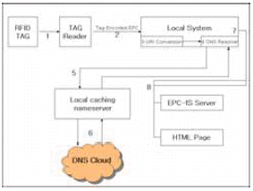
- 1, 2번
- 3, 4번
- 5, 6번
- 7, 8번
(정답률: 69%)
42. RFID 디렉토리 시스템이 하는 역할은?
- 웹 서비스에서 DNS와 같은 역할을 수행한다.
- EPC-Discovery Service와 같이 객체의 이력 정보를 저장한다.
- EPCIS와 같이 객체의 정보를 저장한다.
- RFID 서비스에서 웹서버의 위치정보를 저장 한다.
(정답률: 55%)
3과목: 정보보호
43. RFID 관련 프라이버시 보호 가이드라인의 주요 내용이 아닌 것은?
- 개인정보와 RFID 정보의 결합
- 프라이버시 보호에 대한 기술 개발 방안
- 정보의 수집, 이용제한 및 정확성 확보
- RFID와 프라이버시 보호에 관한 소비자 교육 실시
(정답률: 49%)
44. 다음 중 RFID 프라이버시 보호 원칙 중 공정 정보 규정의 원칙의 내용이 아닌 것은?
- 개방성
- 책임
- 안전보호
- 연계성
(정답률: 60%)
45. 다음 중 RFID 보호 가이드라인 중 ‘RFID 독해 방지 방안 고지 또는 표시’의 내용에 해당되는 사항은?
- 최종선택권
- 적용범위
- 정보제공방법
- 정보의 수집
(정답률: 63%)
46. 프라이버시와 관련한 가이드라인을 가장 먼저 제안한 국제기구는?
- APEC(Asia-Pacific Economic Cooperation)
- OECD(Organization for Economic Cooperation and Development)
- CASPIAN(Consumer Against Supermarket Privacy Invasion And Numbering)
- EPCglobal
(정답률: 63%)
47. RFID 시스템에서의 보안과 프라이버시 위협 요인 중 태그 식별 정보 노출에 따른 위협 요인이 아닌 것은?
- 기업 스파이 (Corporate espionage) 위협
- 행동 (Action) 위협
- Breadcrumb 위협
- 인프라스트럭처 (Infrastructure) 위협
(정답률: 79%)
48. 다음 중 일시적으로 공격자에게 태그의 비밀정보가 노출되었다고 하더라도, 그로 인하여 그 태그와 관련된 사용자에 대한 이전의 모든 행적이 모두 노출될 수 있는 RFID의 보안 문제는?
- 전방향 프라이버시(Forward Privacy) 문제
- 정보 유출 문제
- 추적 가능성 문제
- 감시 위협의 문제
(정답률: 63%)
49. 다음 중 모바일 RFID의 정책 프로파일 기반 개인 프라이버시 보호 기술의 주요 지원 기능이 아닌 것은?
- 감사 로그 관리를 통한 프라이버시 감사 기능
- 프라이버시 보호 정책 설정 및 관리 기능
- 정책에 따른 개인화된 태그에 연결된 정보 접근 제어 기능
- 개인 통신 메시지 데이터 암호화 기능
(정답률: 57%)
50. 다음 설명에 해당하는 RFID시스템 공격 방식은?
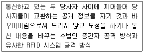
- 칩 내부 공격
- 타이밍 분석 공격
- 템피스트 공격 및 프로빙 공격
- 비파괴 공격
(정답률: 59%)
51. 다음이 설명하고 있는 RFID의 주요 정보 보호 요구사항은?
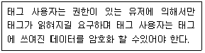
- 기밀성
- 익명성
- 인증성
- 침해 대응성
(정답률: 64%)
52. 다음 설명에 해당하는 RFID시스템 공격 방식은?
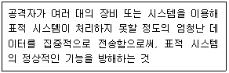
- 스캐닝(Scanning)
- 서비스 거부(Denial of Service) 공격
- 메시지 유실
- 트래픽 분석 공격
(정답률: 75%)
53. 다음 중 모바일 RFID의 복합적인 보안 프레임 워크 강화 방안이 아닌 것은?
- 모바일 RFID 보안 미들웨어
- 정책 프로파일 기반 개인 프라이버시 보호
- 모바일 이동통신 보안
- 보안 응용서비스 게이트웨이 구축
(정답률: 46%)
4과목: 도입절차
54. RFID시스템을 구축하고자할 때의 주파수 선정시 고려사항 중에 인식거리와 관련한 고려사항이 아닌 것은?
- 부착 대상에 따른 정확히 인식할 수 있는 주파수 대역의 고려
- 취득하고자 하는 정보만을 얻을 수 있도록 RFID리더의 출력의 고려
- 인식대상의 이동이나 거리조건에 따라 수동형이나 능동형과 같은 동작방식의 고려
- 대량의 태그 도입에 따른 태그의 가격 고려
(정답률: 65%)
55. 다음 중 RFID 도입시 고려사항으로 극초단파 대역(UHF대역)의 일반 라벨태그를 다음의 재질에 부착하여 사용할 때 재질의 전파특성에 의해 인식거리가 가장 짧은 재질은 어떤 것인가?
- 종이박스
- 플라스틱박스
- 금속박스
- 나무박스
(정답률: 75%)
56. 다음 중 RFID 도입시 고려사항으로 RFID 리더 장치의 사용 환경과 조작환경에 따른 리더 선택의 고려사항이 아닌 것은?
- 사용할 장소의 온도, 습도 등을 고려한 리더의 선택
- 휴대형 RFID 리더의 경중이나 크기, 배터리의 사용시간
- 선형편파 안테나의 수
- 다양한 통신 인터페이스의 지원
(정답률: 62%)
57. RFID 도입시 태그 및 부착방법 고려사항과 관련하여 적용할 업무에 따라 태그의 기능과 성능의 만족여부는 매우 중요한 요소이다. 다음 중 이러한 적용업무에 따른 태그의 고려사항이 아닌 것은?
- 태그내 사용자 메모리 용량
- 사용자 습관
- 태그 저장 코드 용량
- 태그보안정도(Kill, 암호 등)
(정답률: 70%)
58. RFID 시스템에서 환경에 의한 인식률 저하가 아닌 것은?
- 리더간 간섭에 의한 인식률 저하
- 태그 제작 방식에 따른 인식률 저하
- 타 장비에 의한 간섭 현상
- 잘못된 태그 선택으로 인한 인식률 저하
(정답률: 51%)
59. RFID 투자성과 분석에 대한 내용이 아닌 것은?
- 기업이나 공공기관에서 사업 수행 시 발생되는 경제적 효과와 투자비용을 분석하는 것이 투자성과 분석이다.
- RFID 도입 효과는 정성적 효과와 정량적 효과로 나눌 수 있다.
- 일반적으로 투자성과 분석은 전략목표, 성과 목표, 추진과제들을 도출하고 기업의 비젼, 목적 등에 기여하는가를 과학적으로 도출하는 것이다.
- RFID 시스템 도입 효과는 수치 파악이 불가능하다.
(정답률: 67%)
60. RFID 시스템 도입 목표를 분류하는 4가지 방법중에서 단기적이면서 직접적인 목표가 아닌 구축 사례는?
- 출입문 관리
- 공급망 실시간 추적
- 고속도로 통행료 징수
- 컨테이너 태그 부착
(정답률: 56%)
61. RFID 시스템을 도입할 때 추진 조직별 장단점이 아닌 것은?
- SI업체에 의뢰하는 경우 편향된 하드웨어 제품이 선정될 수 있다.
- 자체 IT조직에서 추진할 경우 경험 부족으로 실패할 가능성이 있다.
- RFID 전문 컨설팅 기업에 의해 추진할 경우 비용이 저렴하다.
- 회사 자체적으로 시스템 구축을 주관한다면 자체 IT조직이 추진하는 경우와 동일하게 판단할 수 있다.
(정답률: 71%)
62. 다음 ( )안에 알맞은 것은?
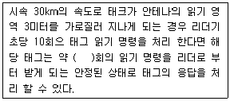
- 3.6회
- 2.4회
- 1.2회
- 1.0회
(정답률: 63%)
63. RFID 전파환경에 대한 일반적인 설명이 아닌 것은?
- 리더의 설치 장소가 복잡한 공장이나 물류센터의 내부이기 때문에 전파 잡음원이 많다.
- 리더의 읽기영역 주변의 전파 환경을 주파수 스펙트럼 분석기를 사용하여 검사할 필요가 있다.
- 사용하고자 하는 RFID의 주파수 대역과 겹치는 제품을 읽기 영역 근처에서는 사용하지 않는 것이 좋다.
- 같은 대역대의 RFID 리더라도 다른 표준의 RFID 리더를 한 장소에서 사용하는 것이 리더의 성능을 향상시키는 요인이 된다.
(정답률: 62%)
64. RFID 태그 기록률(Write Rates)에 대한 설명이 틀린 것은?
- 기록 시에는 읽는 경우 보다 더 많은 전력이 필요하게 되므로 더 작은 RF 영역 내에 태그가 위치하여 기록 되어야 한다.
- 기록에 소요되는 시간은 데이터 읽어 내는데 걸리는 시간 보다 더 길다.
- 태그는 가능하면 이동 중에 Write 하는 것이 좋다.
- 태그를 기록하기 전/후에 읽기 명령을 수행해야 하는 경우가 일반적이므로 시간이 더 많이 소요된다.
(정답률: 62%)
5과목: RFID 표준 및 법제도
65. ISO/IEC18000-3 과 상이한 ISO/IEC 14443에 기반으로 운용된다. 인식거리는 약 10㎝정도로 태그의 메모리 용량이 크고 보안 기능이 ISO 18000-3 에 비하여 강화된 것이 특징으로 주로 금융카드, 교통카드, ID 카드 등으로 사용되는 주파수 대역은?
- 125㎑ 대역
- 13.56㎒ 대역
- 433㎒ 대역
- 860~960㎒ 대역
(정답률: 74%)
66. 다음 중 ISO/IEC JTC1/SC31/WG4에서 ISO/IEC 18000 규격을 다루는 SG는?
- SG1
- SG2
- SG3
- SG4
(정답률: 58%)
67. 다음 중 모바일 RFID에서 채택한 무선 구간의 에어 인터페이스 표준은?
- ISO/IEC 18000-4
- ISO/IEC 18000-6
- ISO/IEC 15691
- ISO/IEC 14443
(정답률: 50%)
68. RFID의 활용 중에서 출생 내력 등 식별정보가 입력된 칩을 동물에 이식하여 혈통관리 및 위치 파악에 이용이 가능한 주파수 대역은?
- 125㎑ 대역
- 13.56㎒ 대역
- 900㎒ 대역
- 2.45㎓ 대역
(정답률: 63%)
69. UHF 대역 RFID중 미국의 FCC Part 15.247에서 규정된 FHSS를 이용할 경우 안테나 이득은?
- 1 dBi
- 2 dBi
- 4 dBi
- 6 dBi
(정답률: 47%)
70. 기동(wake up)신호가 31.25㎑ 부반송파 톤(tone) 신호 후 10㎑ 의 톤 신호를 보내며, 컨테이너 관리용 전자봉인(e-seal)의 기반기술로 사용되고 있는 표준 기술은?
- ISO/IEC JTC1
- ISO/IEC 18000-7 표준기술
- 25 - SMTP
- 80 - HTTP
(정답률: 69%)
71. UHF 대역(900㎒) RFID에서는 정해진 주파수 대역 내에서 호핑 채널이 겹쳐지지 않고 호핑할 수 있는 최소 시간이 정해져 있는데 그 시간은?
- 0.7초 이내
- 0.6초 이내
- 0.5초 이내
- 0.4초 이내
(정답률: 77%)
72. UHF 대역 RFID에서 LBT방식과 FHSS 방식 중 FHSS방식을 기술기준으로 채택하고 있는 국가는?
- 미국
- 일본
- 영국
- 독일
(정답률: 66%)
73. EPCglobal에서 제안한 EPC 코드체계에 포함되지 않는 것은?
- 헤더(Header)
- 태그속성
- 일련번호
- 업체코드
(정답률: 53%)
74. EPC의 구성요소가 아닌 것은?
- ALE
- EPCIS
- EPC 클래스
- ONS
(정답률: 52%)
75. 다음 중 모바일 RFID 서비스 시스템의 구성 요소로 가장 거리가 먼 것은?
- ODS(Object Directory Service)
- 컨텐츠 서버
- OIS(Object Information Service)
- MDM(Multicode Decoding Module)
(정답률: 58%)
76. Root ODS의 기능으로서 맞는 것은?
- 모바일 RFID 서비스 제공을 위하여 필요한 구성요소가 아니다.
- RFID 리더에 전류를 공급하는 장치이다.
- 모바일 RFID 서비스 제공 사업자 간에 콘텐츠를 경제적/효율적으로 운용하기 위하여 RFID 태깅 정보를 국가가 관리하는 서버이다.
- 사용자에게 콘텐츠를 제공하는 서버이다.
(정답률: 67%)
77. 900㎒ 대역 모바일 RFID 방식에서의 최대 데이터 전송 속도는?
- 640Kbps
- 106Kbps
- 212Kbps
- 424Kbps
(정답률: 68%)
78. EPC 코드 종류 중 바코드에서 사용되는 코드를 기반으로 개별 객체의 유일성을 식별하기 위해 만든 코드는?
- DoD(the United States Department of Defense)
- SGTIN (Serialized Global Trade Identification Number)
- SSCC(Serial Shipping Container Code)
- SGLN(Serialized Global Location Number)
(정답률: 45%)
79. 다음의 코드 중 OID가 할당되지 않은 코드는?
- EPC 코드
- 모바일 RFID 코드
- ISO/IEC 15459 코드
- ISO 11784 코드
(정답률: 55%)
80. ISO/IEC 15459 정의 코드에서 발급기관 코드 영역 중 한국을 나타내는 표기로 옳은 것은?
- KR
- KOR
- KKR
- KOREA
(정답률: 73%)